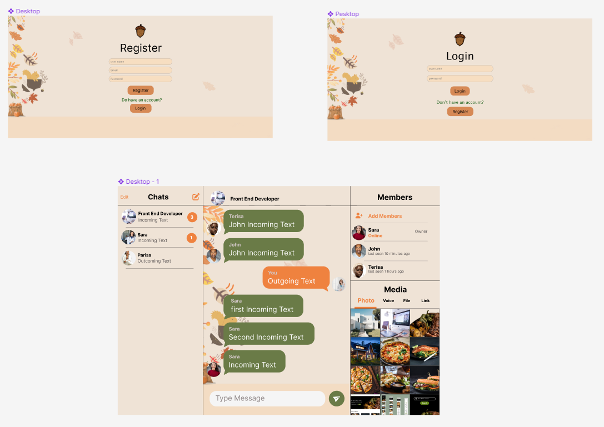
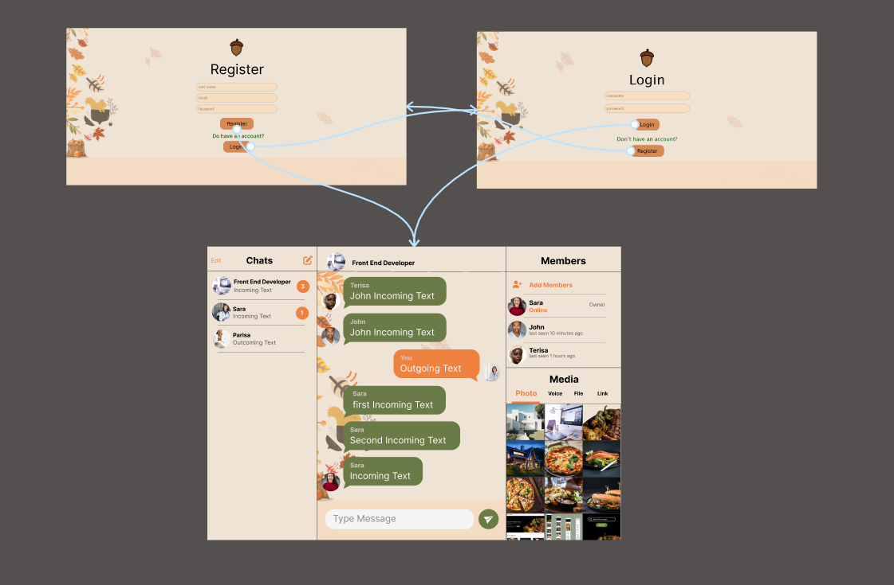

I prioritized the Sanjob Chat page based on the user testing. I started by designing the Chat page because of its importance. After a while, I designed SIgnUp and SignIn page for starting chat as a member of the Sanjob chat page.

